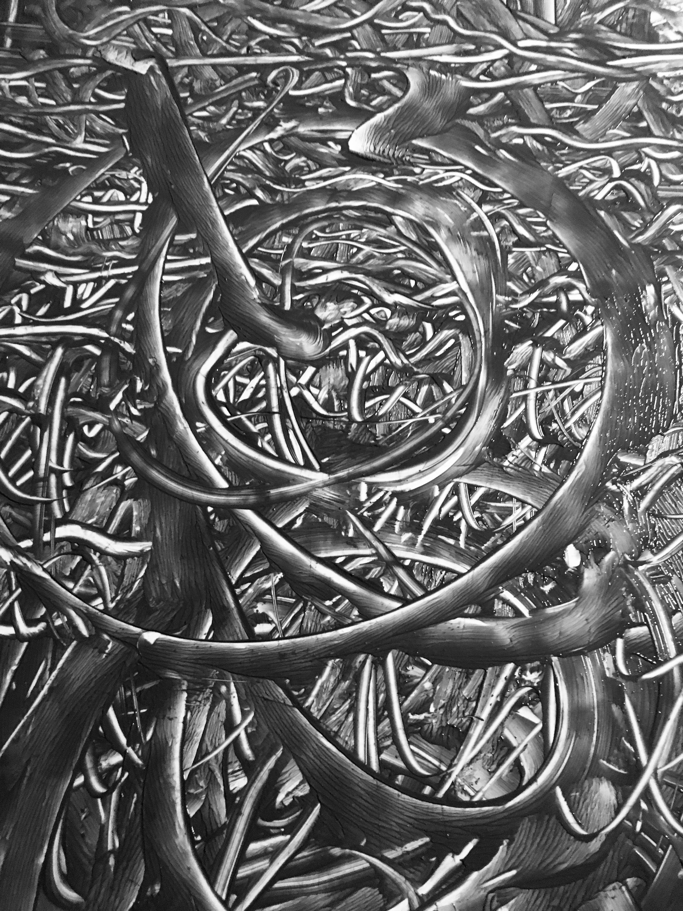
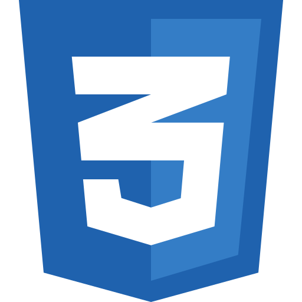
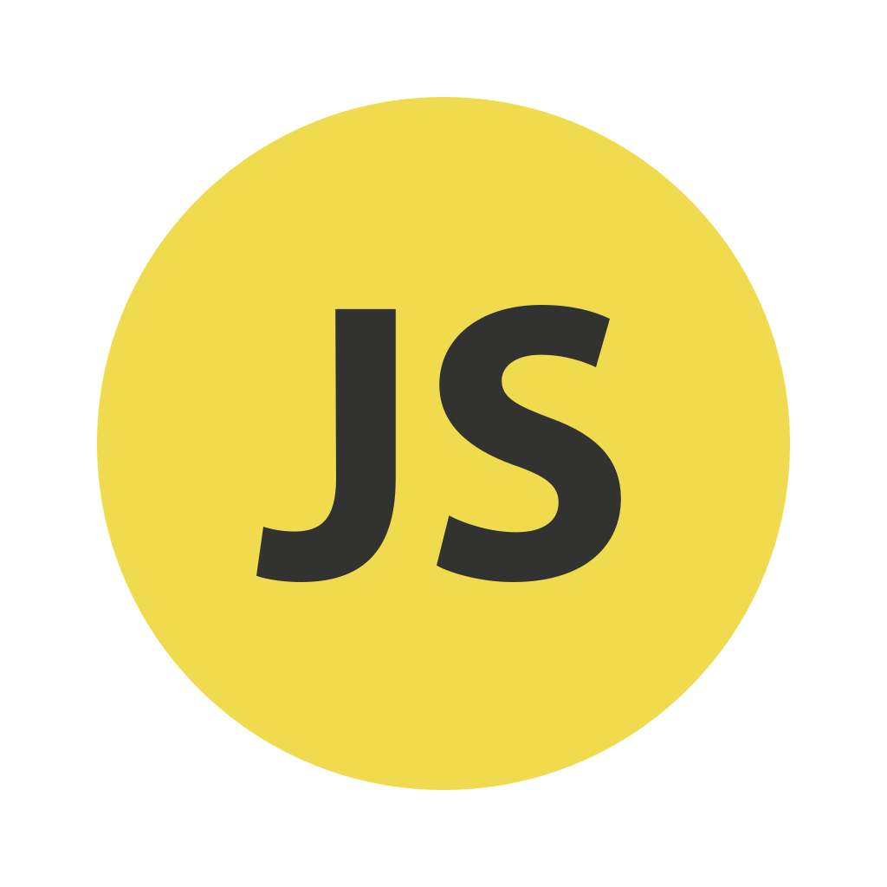
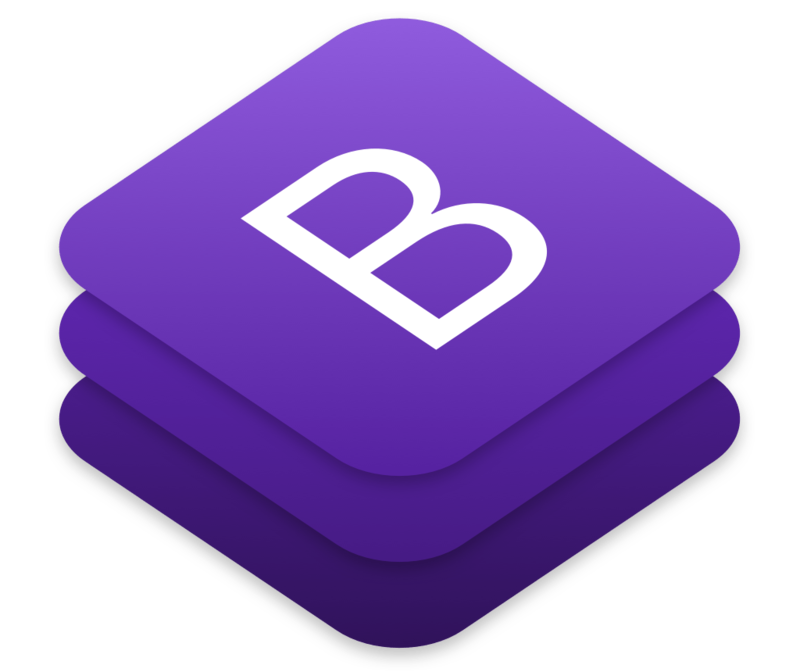
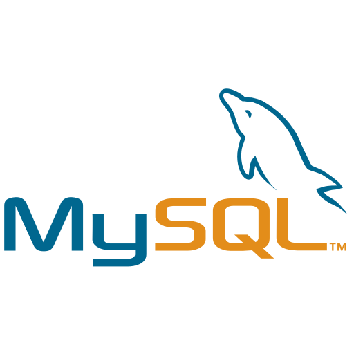
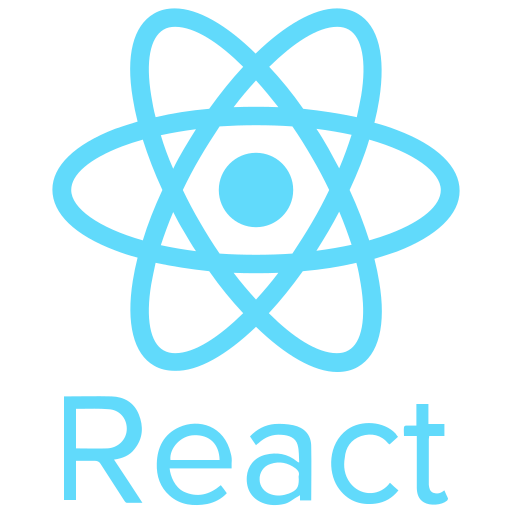
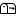

Victor Odin
Etudiant chez DIGINAMIC en recherche d'alternance
A propos de moi
Qui suis-je?
Mon parcours et mes formations

Mes compétences





Mes projets en cours!
Retrouvez tous les projets sur lesquels je travaille:
Sunpower:

Centaury:

Star Wars

Requête XMLHttp

Me contacter
Téléphone
06 09 30 07 06